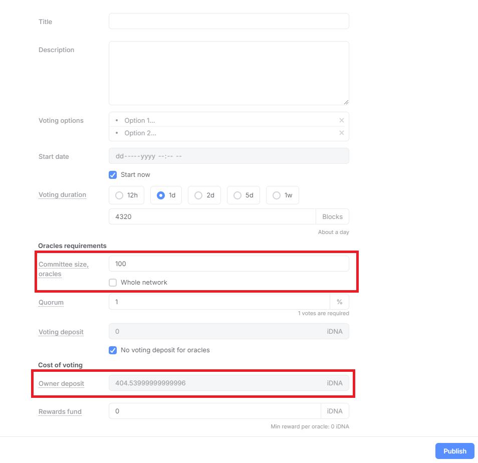
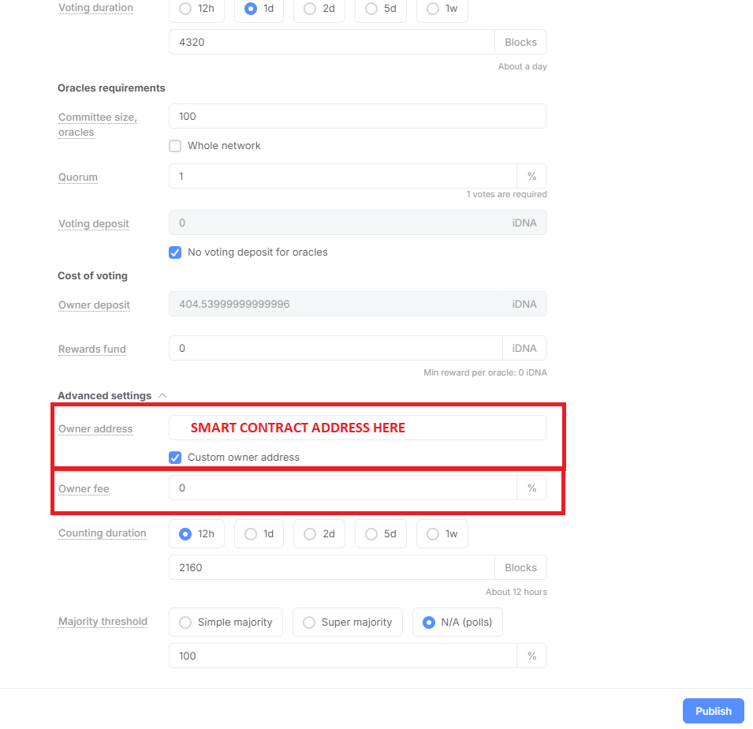
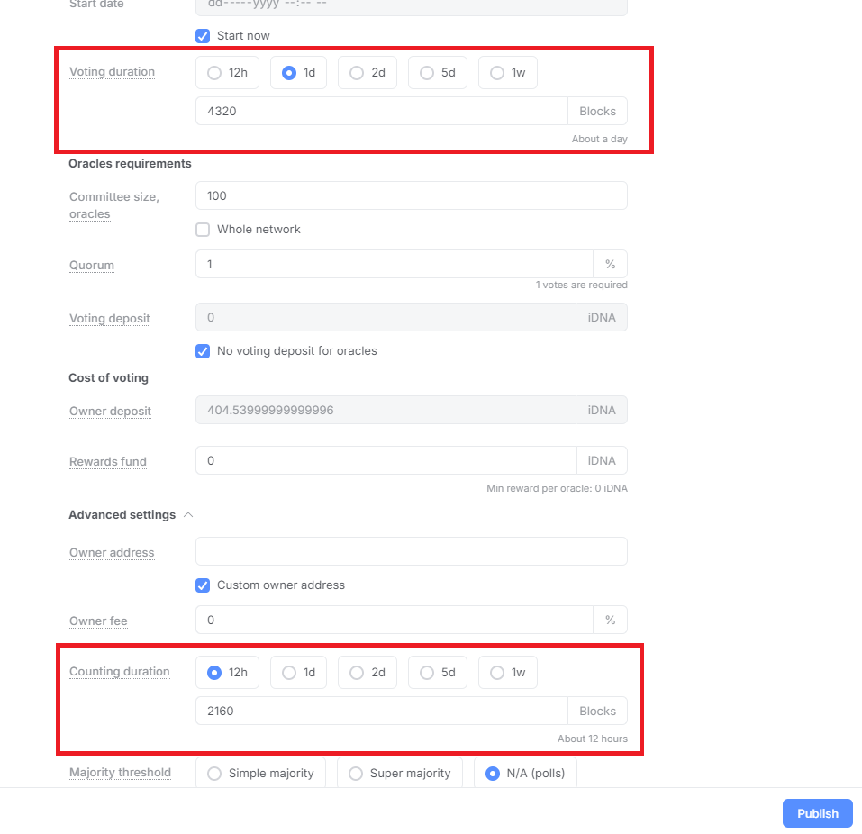
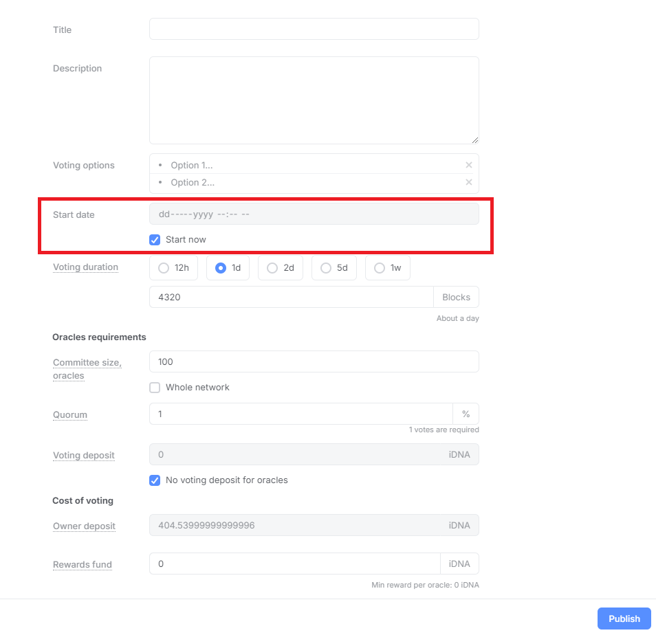

Never heard of Oracle Votes?
You can read this article to find out how oracle votes function: https://medium.com/@Zen-44/oracle-voting-guide-828f730d8016
Important parameters for using Oracle Loan tools
Now that you have an idea of how to create an oracle, below you will find some important fields that need to be set in order to obtain a loan
1. Committee Size
This determines how many coins you will need to borrow. For example, if you select "Whole network" you will need to loan 5000 iDNA. The price goes down for smaller committees. You can check the price on the field "Owner deposit" (which you can not edit)
2. Owner Address & Owner Fee
For your oracle to be accepted, the owner address needs to be set to the smart contract address (you can find it on the main page)
Also, the Owner Fee has to be set to 0 as in the image below.
Note: These fields can be found under "Advanced Settings"
3. Vote Duration
The duration of an oracle vote is split into 2 sections: the secret voting (field "Voting Duration") and vote counting (field "Counting Duration")
What is important for getting a loan is that: these 2 combined should not last more than 4 weeks. Precisely, if you add up the number of blocks from each field, it should be less than 120960 blocks.
4. Start Date
This field determines the earliest you will be able to start the oracle vote. If you want to set this, it needs to be at most 2 weeks in the future for your oracle to be accepted for a loan.
